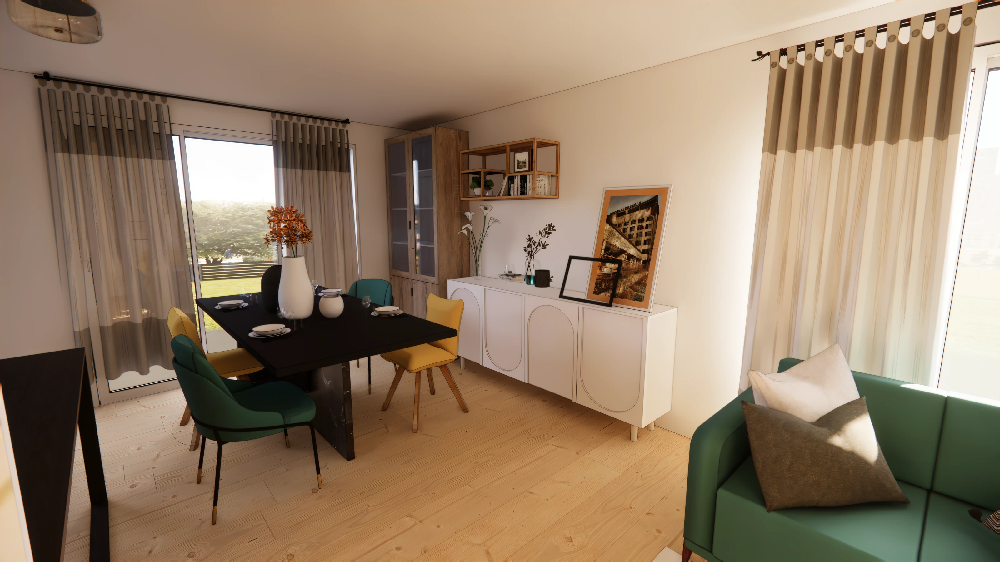

Décoratrice et architecte d'intérieur · Île-de-France
Cent quatre articles,écrits par moi.
Tendances, astuces, erreurs à éviter, guides complets. J'écris depuis 2023 sur la décoration d'intérieur, et je continue.
Une sélection
Les derniers
parus.
Dix articles parmi les cent quatre. Ils sont tous consultables librement.
Tendances
L'éveil sensoriel : les matières stars de la déco 2026
Tendances
Tendance 2026 : le retour aux matériaux bruts et naturels
Mes astuces
Le secret des cuisines chaleureuses, au delà du fonctionnel
Conseils couleur
L'impact psychologique des couleurs : comment choisir sa palette
Conseils
L'art de la lumière : éclairer chaque pièce pour une ambiance réussie
Petits espaces
Aménagement de studio : délimiter le coin nuit comme un architecte
Organisation
Un rangement efficace et harmonieux, je vous donne le secret
Tendances
Retour sur la tendance japandi : épuré, serein et intemporel
Mes astuces
Décorer avec un petit budget : astuces et inspirations
Petits espaces
Optimiser les petits espaces : les secrets d'une déco fonctionnelle
104
articles publiés, tous écrits par
Jessica6
rubriques : tendances, astuces, moodboards,
projets 3D, actualité, présentation5 000
personnes qui suivent ce que je
publieContact
Une question précise ?
Si la réponse tient en un message, je vous la donne. Si elle tient en un projet, on en parle.
Par téléphone06 99 28 37 49
Par e-maillj.decoration.dinterieur@gmail.com
AtelierSaint-Maur-des-Fossés, et à distance